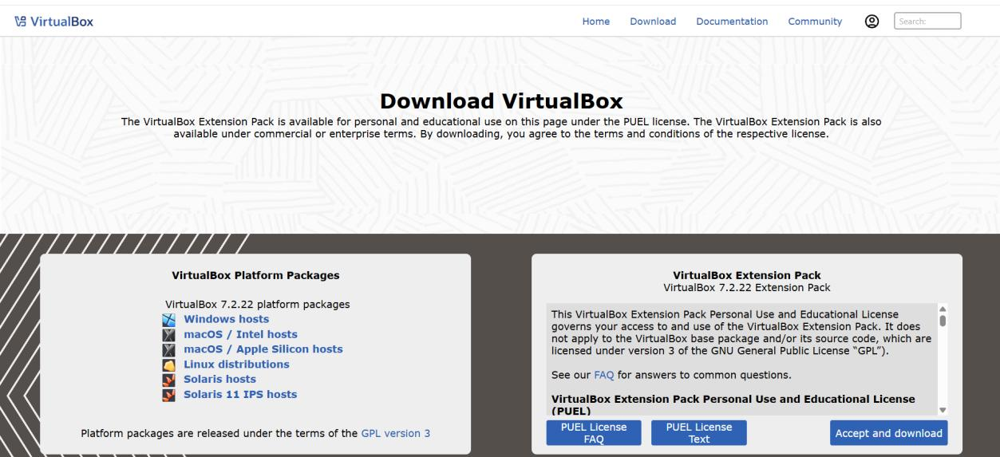
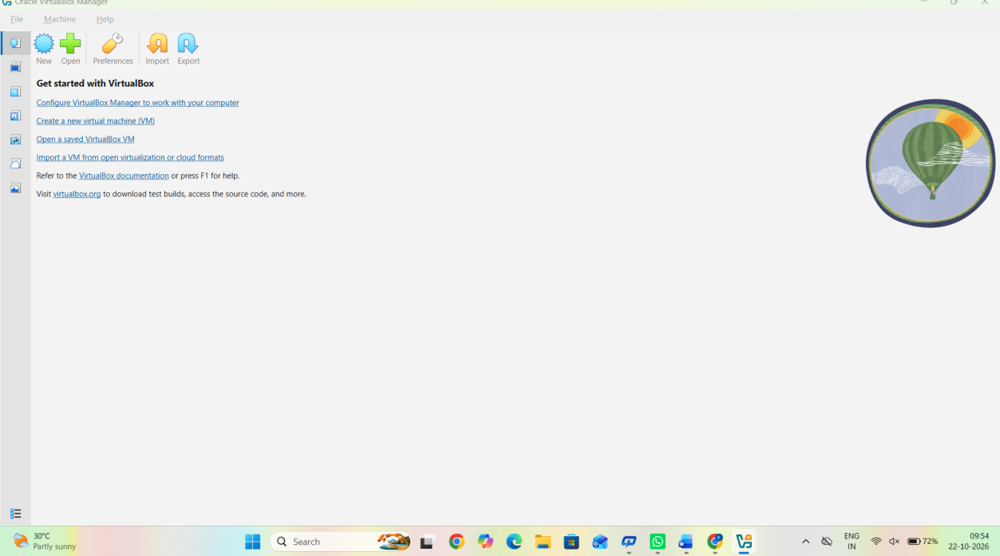

Build your own Cybersecurity Lab.
Learn how to run Kali Linux and Windows in virtual machines without replacing the operating system on your computer. Follow the steps, use official downloads, and compare them with the screenshots from your supplied mini-project PDF.
1. Install Oracle VirtualBox
Install VirtualBox on your computer first. The screenshots from your PDF are included in the relevant steps below.
Check your computer
Make sure your computer supports hardware virtualization and has enough free disk space and memory. Close demanding apps before creating virtual machines.
Download VirtualBox
Open the official VirtualBox downloads page and choose the package for your host operating system. The extension pack is optional; download it only if you need its additional features.
Official VirtualBox downloads ↗

Install and open VirtualBox
Run the downloaded installer, follow the setup prompts, and open Oracle VirtualBox when installation finishes.

2. Install Kali Linux in VirtualBox
Download Kali only from its official website. You can use an installer ISO to create a new VM.
Download Kali Linux
Open the official download page and choose the installer image suitable for your computer. Keep the ISO file somewhere easy to find.
Create a virtual machine
In VirtualBox, click New, give the virtual machine a name, and select the downloaded Kali ISO as the installation image. Choose the appropriate Linux/Debian type if asked.
Allocate resources
Give the VM a sensible amount of RAM, CPU cores, and disk space based on your host computer. Leave resources for your main operating system; you can adjust settings later while the VM is powered off.
Install and sign in
Start the VM and follow the Kali installer screens. Set your own username and a strong password, then reboot when installation finishes. Remove or disconnect the ISO if the VM returns to the installer.
Update Kali
After signing in, open Terminal and run:
sudo apt update && sudo apt full-upgrade
Enter your password when prompted. Review package changes before confirming.
3. Install Windows in VirtualBox
Create a separate virtual machine for Windows. Your Kali and Windows VMs can remain independent.
Download the Windows ISO
Use Microsoft's official Windows 11 download page. Check the licensing and system requirements that apply to your use.
Official Windows 11 download ↗
Download Windows 11
Microsoft official software download page
Choose the available Windows 11 download option and follow Microsoft's on-screen instructions to obtain the installation media (ISO).
Open Microsoft download page ↗The real page may look different as Microsoft updates its website. Use the official page for the current options.
Create a separate VM
In VirtualBox, click New to create a separate virtual machine and select the Windows ISO. Choose Windows 11 as the guest OS when prompted, if that option is available in your version.
Install Windows
Start the VM and follow the Windows setup. Configure virtual disk and memory appropriately, then complete the setup and sign in. Windows activation or licensing may be required.
Keep the lab safe
Use snapshots before experiments, keep the host and guests updated, and only test security tools on systems and networks you own or have permission to assess.
Your original PDF screenshots
These are the actual embedded images extracted from balaji mini project.pdf, arranged in source order. The same screenshots are also placed beside matching instructions where useful. Click any image to enlarge it.
Before you begin
- Back up important files before changing firmware or disk settings.
- Download installers only from official sources.
- Ensure hardware virtualization is enabled if VirtualBox reports that it is unavailable.
- Use a unique password for your virtual machine.
- Remember that commands shown in the PDF are for Kali/Linux; do not run them in Windows Command Prompt.